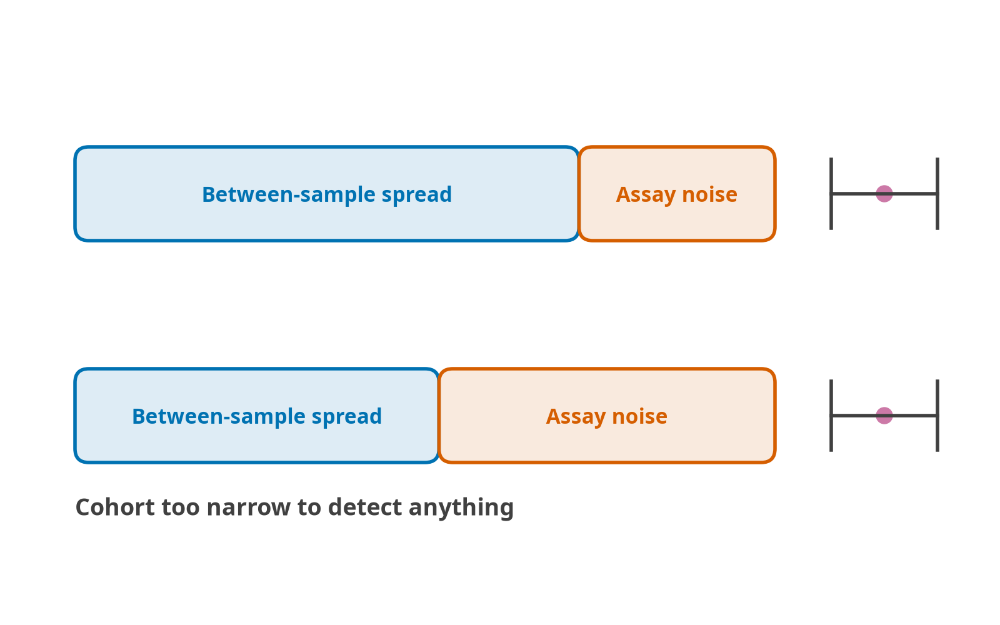

Uncertainty, specimen and platform
Measurement uncertainty
Technical replicates of the same DNA differ by up to nine years on prominent clocks, so a bare number does not say whether a difference between two samples is real.
se = fa.technical_se(res, d)
se.diagnostics[["median_se", "se_over_sd", "implied_cohort_icc"]]
fa.conformal_interval(res, level=0.90) # the other, larger uncertainty
fa.power("horvath2013", effect=0.5, result=res) # how many samples you needu <- technical_se(res, d)
u$diagnostics
conformal_interval(res, level = 0.90)
power_n("horvath2013", effect = 0.5, result = res) method n_features median_se se_over_sd implied_cohort_icc
horvath2013 probe 353 1.58 0.14 0.98
hannum probe 71 2.46 0.22 0.95
dunedinpoam38 probe 46 0.04 0.53 0.72Two samples whose intervals overlap are not distinguishable by that clock on that assay, however different their point estimates look.
19. Uncertainty, specimen and platform
The preceding sections are about computing the number correctly. This one is about the fact that a correctly computed number is still not interpretable on its own, which is what the field’s own literature says and what no implementation, including this one until now, did anything about.

Reliability is not a property of a clock alone. The intraclass correlation is 1 - SE^2 / SD^2, so the same technical error divided by a narrower between-sample spread gives a worse coefficient without anything about the assay having changed. A clock with an excellent published ICC, measured on a cohort spanning sixty years of age, can be unable to resolve anything in a trial whose participants are all within a decade of each other. That is the calculation to run before recruiting, not after.
19.1 The point estimate problem
Split one DNA sample, run both halves on the same array, and six prominent clocks disagree with themselves by up to nine years (Nat Aging 2022). In adult whole blood many 450K probes are measured unreliably, and the unreliable ones replicate worse (Sugden et al., Patterns 2020;1:100014, doi:10.1016/j.patter.2020.100014); DunedinPACE was trained only on the 81,239 probes shared by 450K and EPIC whose ICC exceeded 0.4 in that study (Belsky et al. 2022). A reader handed “DNAmAge = 54.2” cannot tell whether a 1.5-year change between two draws is biology or the assay.
Every package in the field emits that bare number. FALCONAge emits an interval, and the arithmetic behind it is short enough to check by hand.
19.2 Propagating measurement error
A linear clock is score = f(b + wᵀβ). Give each probe a measurement variance σ²ⱼ and the score’s variance follows directly:
\[\operatorname{Var} = f'(\text{raw})^2 \sum_j w_j^2\,\sigma_j^2\]
\[\sigma_j^2 = s_j^2\,(1 - \mathrm{ICC}_j)\]
with s²ⱼ the spread of probe j across the cohort in front of you and ICCⱼ its published test-retest reliability. One matrix–vector product per clock.
Three parts of that are load-bearing:
The ICC table is measured, not assumed. registry/data/probe_icc.csv.gz carries 283,860 probes, derived from 69 blood samples each assayed twice on EPIC v1 and preprocessed with SeSAMe 2, using the two-way random-effects, absolute-agreement, single-rating model, ICC(2,1) (Epigenetics 2024, CC BY 4.0). Its citation, licence and SHA-256 go into the run manifest, because an interval whose provenance is not recorded is worse than no interval.
An imputed feature contributes its full variance. Not the reduced s²(1−ICC). An imputed probe is the cohort mean or a published reference; it carries no information about the sample in front of you. Treating it as well-measured would make worse data produce a narrower interval, which is the wrong direction and the part of the calculation most likely to look like a bug.
The output transform is differentiated, not linearised once. Horvath’s anti_log_linear has slope 21·eˣ below zero and 21 above it, so a child’s uncertainty and an adult’s scale differently from the same raw error. Every op in the catalogue has an analytic derivative; the four that destroy the information (binarize, rank_normalize, quantile_normalize, simplex_projection) have none, and a chain containing one refuses rather than skipping the step and returning a confidently small interval.
The sum assumes probe errors are independent, and they are not. Writing \(\sum_j w_j^2 \sigma_j^2\) drops the cross term \(2\sum_{j<k} w_j w_k \operatorname{Cov}(\varepsilon_j, \varepsilon_k)\). Chip position, plate and scanner drift move many probes together, and those covariances are positive far more often than negative, so the SE reported here is a lower bound, and not necessarily a tight one, since a clock with hundreds of positively correlated terms can have a true SE several times this.
The honest alternative does not exist: a \(319{,}607 \times 319{,}607\) error covariance would need replicate designs nobody publishes. What exists is a cross-check. source="clock" derives the same quantity from a published clock-level ICC measured on real technical replicates, which does contain the correlated part; when the two disagree substantially, the clock-level figure is the one to believe and the gap is the correlated component the probe path cannot see. icc_from_replicates() closes it properly on your own duplicates. This is stated rather than buried because an interval presented without its assumption is exactly the false precision the section exists to argue against.
On the corpus, Horvath 2013 comes out at ±1.58 years of technical error with an implied cohort ICC of 0.98; DunedinPoAm38 is the least repeatable at 0.72; the 319,607-probe BLUP clock reaches 1.00, because a weight spread thinly over the whole array averages the noise away. That last result is the same mechanism that makes PC clocks robust to probe loss, arrived at from the other direction. Read all three as lower bounds, for the reason just given.
19.3 Prediction error is a different, larger question
technical_se() asks what a repeat of the same DNA would do. conformal_interval() asks how far the number is from the truth.
Split conformal: take healthy whole-blood samples with known ages, compute the absolute residuals, and the ⌈(n+1)(1−α)⌉/n quantile is a half-width that covers the truth at the stated rate on any exchangeable sample. No distributional assumption is made, and the guarantee is finite-sample. Conformalised quantile regression (Genet Epidemiol 2025) is the better version, widening the interval where the training data were sparse; it needs fitted quantile models, so split conformal ships and the calibration table reports the width per age band so a reader can see where one width is lying.
The calibration takes whole blood, buffy coat and peripheral blood leukocytes from adults, and nothing else. The corpus also labels sorted populations and PBMC as blood, and on those a whole-blood clock’s residual carries the cell type: on its healthy controls Hannum ran 21 years low on CD8+ T cells, and DNAm PhenoAge 24 years low on CD14+ monocytes and 40 on CD8+ T cells. Until that was noticed they were more than half the calibration set, and the widths quoted composition as clock error.
The limitation is not small and is stated in the output: every row carries exchangeable = False. The calibration cohort is adult, blood, and overwhelmingly of European ancestry. On a paediatric or non-European cohort the guarantee does not transfer, and no widening factor would make it.
19.3.1 What the calibration found, and what it turned into
The first calibration put Ying’s DamAge and AdaptAge 37–150 years from chronological age. The obvious reading (“these are not age predictors”) turned out to be wrong, and the measurement that settled it is worth reproducing because the distinction it draws is a general one.
Regress predicted on chronological across the corpus’s healthy cohorts:
| clock | r | slope | offset swing between datasets |
|---|---|---|---|
| horvath2013 | 0.905 | 0.982 | 15 y |
| yingcausage | 0.960 | 0.954 | 15 y |
| yingdamage | 0.909 | 0.967 | 162 y |
| yingadaptage | 0.745 | 1.170 | 162 y |
DamAge’s slope is 0.967, better than DNAmPhenoAge’s 1.199. It tracks age. What it does not have is a fixed origin: its offset against chronological age is −84 years in one healthy cohort and +78 in another.
The mechanism is visible in one number. DamAge and AdaptAge move as near mirror images, r = −0.975 across datasets, and the swing in their sum is only 33 years against 162 for each alone. Their published intercepts are +543.43 and −511.97; a dataset-level shift in overall methylation pushes one up and the other down by nearly the same amount. One shared offset, hugely amplified, not two broken clocks.
So neither obvious label fits. age_years would license predicted − chronological, which measures the cohort. relative_score would forbid the residual and the group difference, the operations the paper itself reports, and would contradict a unit of years and a training target of chronological age, both of which are accurate.
They are age_years_relative: years, slope near one, no fixed zero. LEGAL_OPS admits residual, difference, mean and correlate, and refuses acceleration. The vocabulary had listed acceleration and residual separately since v1.0 and nothing had ever read the difference; this is the first clock that needs it.
19.4 Specimen type is not metadata
Same 91 people, three specimens (bioRxiv 2025.09.16.673560, CATSLife1, mean age 30.9):
| Comparison | Mean difference in clock age | Spearman between the two |
|---|---|---|
| saliva vs buffy coat | 3.83 – 16.46 years | 0.45 – 0.69 |
| saliva vs PBMC | in the same direction | 0.25 – 0.55 |
| buffy coat vs PBMC | −0.06 – 0.39 years | 0.66 – 0.87 |
Read the two columns together, because separately each is reassuring. Saliva and buffy coat clock ages correlate at up to 0.69, a correlation most people would accept, and are still a decade apart. Correlation is not agreement, and the check that gets run is the correlation. The blood pair is the control: same study, same pipeline, difference under half a year, which is what makes the saliva number a specimen effect rather than noise.
Which clock matters as much as which specimen. On those samples DunedinPACE differed by −0.007 biological years per chronological year (p = 0.486) where Hannum differed by 12.5 years, so “this clock transfers” is a per-clock fact, not a per-tissue one, and FALCONAge therefore holds the policy per clock. Across unrelated tissues the published figure is 20–30 years (PMC12714307).
FALCONAge reads obs["tissue"] against each clock’s declared training tissue and takes one of three positions:
allow- the genuinely pan-tissue clocks. Nothing to say.
warn- the default. Says what the clock was fitted on, what it was given, and the measured discordance where one is published.
refuse- twelve clocks whose training tissue has no counterpart elsewhere: four placenta clocks, three cord-blood clocks, neonatal blood spots, buccal, and three brain clocks. A placenta clock on blood is a category error, not an offset.
Not every package holds a policy. methylclock 1.16.0’s DNAmAge() takes no tissue argument and, with its default clocks = "all", returns PedBE, a buccal clock (McEwen et al., PNAS 2020), for blood. FALCONAge refuses PedBE on blood, so a clock missing from a FALCONAge run that another package reported is sometimes the refusal working.
Cell-free DNA is refused by every clock regardless of policy. It is not a tissue a clock generalises to; it is a fragment population shed from many of them, and array clocks applied to it directly perform poorly (bioRxiv 2025.11.27.690895).
And when obs has no tissue column at all, the run says so once, because silence was the previous behaviour, and silence is the bug.
At first the integration tests scored the three Lee placenta clocks on GSE66459, which is umbilical cord blood, and asserted only that the answers looked like gestational weeks. They did, because gestational age is gestational age whatever tissue you read it from. That is exactly the failure the check exists to catch, and it caught it here first.
19.5 Probe loss, priced
probe_loss() has always said how much of a model is absent: count and coefficient mass. It could not say what that costs. Now it can, because the cost was measured: every full-450K matrix in the corpus, masked down to each platform’s probe set and rescored, 206 samples across eight datasets. The two right-hand columns are the same masks under two ways of filling an absent CpG: the mean of the clock’s present CpGs in the data, which FALCONAge used until the reference values existed, and the clock’s reference value, which it uses now.
| clock | platform | probes kept | pooled fill | reference fill |
|---|---|---|---|---|
| hrsinchphenoage | EPICv2 | 874 / 959 | +15.9 y | +0.88 y |
| yingcausage | EPICv2 | 492 / 585 | +14.8 y | −6.1 y |
| hannum | EPICv2 | 64 / 71 | −11.5 y | +1.03 y |
| lin | EPICv2 | 96 / 99 | −9.3 y | +0.84 y |
| yingdamage | EPICv2 | 1009 / 1089 | +9.1 y | +0.66 y |
| horvath2013 | EPICv2 | 339 / 353 | −2.5 y | −1.3 y |
| zhangblup | EPICv2 | 286,843 / 319,607 | −0.46 y | −0.46 y (no fill) |
| yingdamage | EPICv1 | 1089 / 1089 | 0.00 y | 0.00 y |
| vidalbralo | either | 8 / 8 | 0.00 y | 0.00 y |
Most of what the pooled column prices is the fill, not the loss. A pooled value sits near 0.5, and clock CpGs are often near 0 or 1: lin lost three probes of ninety-nine and moved nine years. Filled from the reference, the same masks move hannum, lin, hrsinchphenoage and yingdamage by about a year or less; over the 19 rows on the years scale whose fill changed, the median absolute shift fell from 3.36 to 0.66 years, and 38 of the 45 rows with a reference moved less. Those numbers are out of sample: the blood reference is a mean over healthy controls in this corpus, so each dataset was scored against it rebuilt without that dataset (scored in-sample, hannum read −0.40 rather than +1.03). yingcausage still moves six years, its 93 lost CpGs carrying weight that no fixed value stands in for.
zhangblup fills nothing, because an absent probe drops out after the per-sample standardisation, and loses ten percent of a 319,607-probe model for under half a year at the median: the graceful-degradation property published for PC clocks, reproduced here in a different architecture. Its shift has two parts. Scored on the same samples, the lost probes alone move the estimate by −0.64 y at the median, and restandardising over the EPIC v2 probe set by +0.15 y. And the two rows at exactly zero are the internal check: a clock that loses nothing must shift by nothing, and does.
What the table does not cover, so it is not read as covering it. 86 rows: 43 clocks × two targets, EPIC v1 and EPIC v2. For the six deconvolution entries the shift is not probe loss alone: a 450K matrix is deconvolved with the 350-CpG legacy IDOL table and an EPIC one with the 450-CpG table, so their rows price a change of array, which is what a user moving between arrays sees (a median shift of at most 0.034 in a cell-type proportion). 450K is the reference the shift is measured from, so it cannot appear, its shift is zero by construction, not by measurement. 27K is absent for a different reason: masking a 450K matrix to 27,578 probes leaves most of these clocks below the coverage floor, so what would be measured is the shift of a clock that would have been refused anyway. And the reference cohort is 206 blood-derived samples of adults, whole blood and leukocytes as well as PBMC and sorted T cells; a shift measured there is a reasonable prior for another blood cohort and not a correction factor for a different tissue.
The shift is reported and never applied. An automatic offset would be a second number nobody can trace, which is the failure the coefficient digests exist to prevent.
Platform loss or probe QC. A clock CpG can be absent for two reasons, and only one of them is permanent. If the array does not carry it, nothing recovers it. If the array carries it and the data lacks it, it was measured and then removed, almost always by probe filters (SNP-affected, cross-reactive, failed detection) that belong to an epigenome-wide association study and not to clock scoring. With the platform’s manifest in the cache, probe_loss() counts the second kind in n_removed_by_qc and qc_removed_mass, and score() warns (category probe_qc) once the removed CpGs carry 1% of a clock’s |coefficient|. The manifest is never downloaded during scoring; fetch_manifest(platform) caches it once. On one cohort’s QC-filtered EPIC v1 betas this separates the two cleanly: all 30 of DNAmTL’s absent CpGs were removed by QC (11.1% of its weight), while Horvath’s 27 absent CpGs split into 8 removed by QC (2.7%) and 19 the array never carried. The remedy is to score clocks on normalised but unfiltered betas.
19.6 A reported score must not move when the next plate arrives
ComBat estimates its location and scale from every sample at once. Add a batch, re-run, and every previously corrected value changes, measured directly on epigenetic ages as a mean shift of 0.077 to 0.39 years with a maximum of 2.20 years (iComBat, PMC12495439).
A 2.2-year retrospective change in someone’s reported biological age, caused by a stranger’s sample being run three months later, is not a rounding difference. The individual-level critique of these measures lists “longitudinal comparability without re-running all samples” as a prerequisite for any clinical use, and this is precisely it.
fit_batch_reference() freezes the per-probe grand mean, covariate effects, pooled variance and the empirical-Bayes hyperparameters on a reference cohort. apply_batch_reference() standardises each later batch against those frozen values and estimates only that batch’s own additive and multiplicative effects. A batch’s corrected values then depend on that batch and the reference alone. There is no path through the arithmetic by which a new plate could move an old one, and the test asserts bit equality rather than closeness.
Freezing the hyperparameters is the part that is easy to get wrong. Leave them free and adding a batch re-estimates the prior, which moves every other batch’s shrunk estimate, and the whole exercise is ComBat with extra steps.
Two designs are refused: a batch with fewer than eight samples, and one where the variable of interest is nested inside batch. The second matters because correcting a confounded design removes the effect along with the artefact and returns a clean-looking null, the one failure mode of batch correction that looks like success.
19.7 Before the first array, and after the last
power() answers “how many samples to see this effect on this clock”, and needs no data file. It refuses to default the standard deviation, because n scales with its square and a guessed SD is a guessed answer reported to three significant figures. Where a reliability figure is available it splits the answer: at ICC 0.9, a tenth of the sample size exists only to average out the instrument. That is the arithmetic behind the published finding that the original clocks need 3–16 replicates per condition where their PC versions need 1–2.
consensus() implements the decision rule from When to Trust Epigenetic Clocks [77]. Re-analysing six intervention datasets, the authors found that in five of six exactly one clock reached significance, a first-generation clock every time, and four of those five lost it under multiple-testing correction. In no case did the PC version of the same clock corroborate. Their conclusion, in their words: a single significant clock after an intervention is likely a false positive. The same group later widened this to 16 clocks and 94 further biomarkers across the 51 longitudinal studies of TranslAGE [78], which is where the clock grouping the FALCONAge report uses comes from.
That PC clause is the sharpest test in the paper, and by default FALCONAge cannot run it. The principal-component clocks are licensed: the authors’ data file (CalcAllPCClocks.RData, linked from the PC-Clocks repository) carries no licence, so it is not ours to distribute, and a corroboration check with nothing to check against would be inert. consensus() therefore names each clock’s counterpart in high_reliability_partner, reports agreement in partner_corroborates, and where the counterpart was not scored it says so in the verdict string rather than dropping the clause. fa.registry.load().import_pc_clocks(path) turns the check on: it reads a downloaded copy of that file and registers PCHorvath 2013, PCSkinAndBlood, PCHannum, PCPhenoAge and PCDNAmTL, each collapsed exactly to one weight per CpG with the authors’ fill values for absent CpGs, and it reproduces the authors’ run_calcPCClocks.R to 1e-10. PCGrimAge, eight sub-models on the components plus sex and age, needs a composite model class FALCONAge does not have yet.
So consensus() tests every scored clock, corrects across the whole set actually run, and returns a verdict rather than a table to pick from: supported needs significance across at least two generations including an outcome-trained clock and survival of Bonferroni; one lit clock is unsupported whatever its p-value. The verdict string always carries the counts it was computed from, a verdict without its arithmetic is an oracle, and that is the opposite of the posture of this package.
Repeated measures. An intervention usually measures the same people more than once, and treating each visit as a new person lets the spread between people swamp the change within them. design="paired" tests each person’s change from one visit to another (subject_col names the person); design="mixed" fits y ~ visit + (1 | person) by REML, keeps a person who missed a visit, and takes any number of visits, testing them jointly. It reproduces nlme::lme on a design with missing visits: estimates to 1e-7, standard errors to 1e-6, and the containment degrees of freedom exactly (Pinheiro & Bates 2000). Both add mdc95, the minimum detectable change 1.96·√2·SEM with the SEM the within-person SD across the visits (Weir 2005), and flag a significant mean change that is smaller than it: twelve people can make a group change of 1.6 SD of the change significant while no one of them could be shown to have changed. That SEM holds day-to-day biology and assay noise together; technical_se() gives the assay part alone, and variance_components() separates the two when there are technical replicates.
19.8 Evidence, attached to the score
result.evidence() returns what a value on this clock has been shown to predict, with effect sizes and DOIs. Seeded from studies that tested many clocks on one cohort under one protocol, so the rows are comparable to each other: GrimAge v2 at hazard ratio 1.54 per SD for all-cause mortality and 1.86 for cirrhosis, DunedinPACE at 1.44 for diabetes, and the observation that first-generation clocks account for about 5 % of significant disease associations across 174 outcomes in 18,859 people (Nat Commun 2025).
A row without a DOI is rejected at load time. An uncheckable effect size looks identical to a checkable one in a table, and is worth less than nothing.
The most useful row is not about any clock. Across 39 biomarkers in more than 20,000 people, a clock’s chronological-age accuracy and its mortality prediction are uncorrelated: R = 0.12, P = 0.67 (Nat Aging 2025). That is the empirical justification for scale_type and LEGAL_OPS, and it is the reason “which clock is most accurate” is the wrong question.
19.9 What was deliberately not built
Recorded so it does not appear by accident.
- No silent correction. Batch reference, platform offset and interval are all reported. A score adjusted by an untraceable factor destroys the provenance discipline that is the reason to use this package.
- No percentile against an unnamed population. The same person reads as accelerated or decelerated depending on the comparator; a percentile without a cited reference cohort means different things to different readers.
- No diagnostic thresholds. None exist in the literature. Nothing here is coloured red above a cut-off.
- No LLM dependency. A scoring library whose output depends on a model that changes weekly is not reproducible.